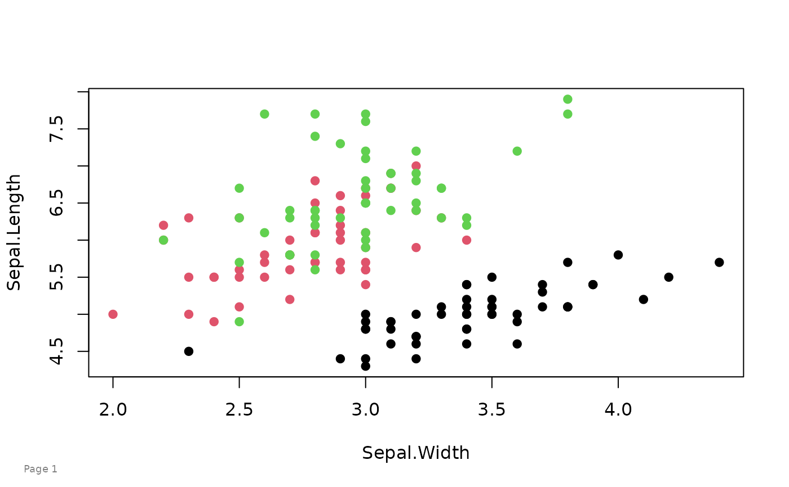

Put Page Numbers on Graphics
Usage
pagenum(
num,
text = "Page",
date = FALSE,
date.format,
x = 0.03,
y = 0.03,
just = c("left", "bottom"),
col = "gray50",
cex = 0.75
)
setPagenum(num = 1)
getPagenum()Arguments
- num
The number to put on the page. If no number is given, the value of
options()$pagenumis used.- text
The text to use in front of the page number.
- date
If FALSE (default), do not add a date below the page number.
- date.format
The format to use for the date.
- x
Horizontal position of timestamp, in [0,1]. Default .03
- y
Vertical position of timestamp, in [0,1]. Default .03
- just
Jufstification. Default c('left','bottom')
- col
Color to use for the text.
- cex
Character expansion. Default 0.75.
Details
Use setPagenum to create a global variable with the page number.
If pagenum() is called without an argument, the value of
options()$pagenum is used to determine the page number.
Each time pagenum() is called, options()$pagenum is
automatically incremented by 1.
References
Mark Heckmann (2009). R: Good practice - adding footnotes to graphics. https://ryouready.wordpress.com/2009/02/17/r-good-practice-adding-footnotes-to-graphics/
Examples
# base graphics
setPagenum(1)
plot(Sepal.Length~Sepal.Width, data=iris, col=Species, pch=19)
pagenum()

# lattice, date
setPagenum(getPagenum()+1) # Manual increment
require(lattice)
#> Loading required package: lattice
xyplot(Sepal.Length~Sepal.Width, data=iris, groups=Species)
pagenum(date=TRUE)
# ggplot2, top-right
require(ggplot2)
#> Loading required package: ggplot2
ggplot(iris, aes(x=Sepal.Width, y=Sepal.Length,
color=Species)) + geom_point() + theme_classic()
pagenum(text="ABC Corp - ", date=TRUE,
x=.95, y=.95, just=c('right','top'))
# multiple figures, 'draft' watermark
op = par(mfrow=c(1,2))
plot(Sepal.Length ~ Sepal.Width, data=iris, col=Species, pch=19)
plot(Petal.Length ~ Petal.Width, data=iris, col=Species, pch=19)
par(op)
pagenum(num="", text="Figures 2a, 2b")
pagenum(num="", text="Draft",
x=.5, y=.95, just=c('center','top'),
col="wheat", cex=3)